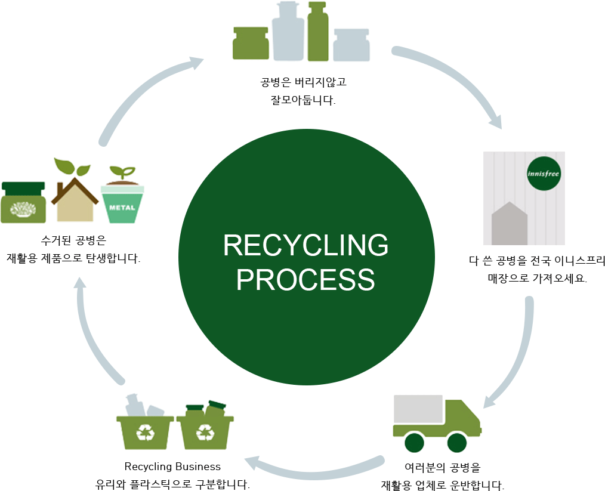
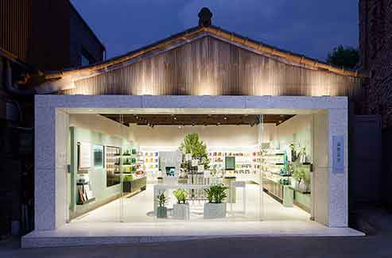

이니스프리 공병수거 캠페인
다 쓴 화장품 용기는 돌려주세요!
여러분의 공병이 모여 울창한 나무숲이 됩니다.
2010년 부터 현재까지 이니스프리를 통해 수거 된 공병 수거 누적 집계입니다.
현재까지 총
29
,
728
,
525
개의 공병이 모였습니다.최종 업데이트 일자 : 2020년 8월 11일

이니스프리 공병수거 캠페인, 이렇게 참여하세요.
01 화장품을 다 사용한 공병을 지참하여 매장에 방문합니다.
02 뷰티포인트 통합회원으로 가입하세요. (이니스프리 홈페이지에서 가입하세요.)
03 공병 한 개당 300원씩 월 10개까지 최대 3,000원 적립이 가능합니다.
※ 이니스프리 기초, 선, 바디, 헤어, 방향 제품 본품 중 유리, 플라스틱 재질에 한하여 가능합니다. (내용물 없는 공병일 때 수거 가능)
※ 재질이 혼용된 제품 중 재질 분리가 불가능한 제품, 메이크업 류, 캔 스프레이 류, 스틱 류, 염색 약, 샴푸, 향수는 공병 수거 대상 제품에서 제외됩니다.
다시, 아름다움을 담다 ‘공병공간’

공병공간은 자원 순환의 가치를 전달하기 위해 선보인 업사이클링 매장입니다.
소격동의 80년 된 한옥 두 채를 연결하고 내 외부 공간의 70%는
23만 개의 이니스프리 공병을 분쇄해 만든 마감재로 꾸몄습니다.
공병공간에서 직접 공병을 파쇄해 보고
공병으로 만든 ‘그린 프로덕트’도 만나보세요.
서울시 종로구 율곡로3길 73 (소격동 152-1)
재활용을 생활화 하는 우리의 작은 변화로 그린 라이프를 실천합니다.